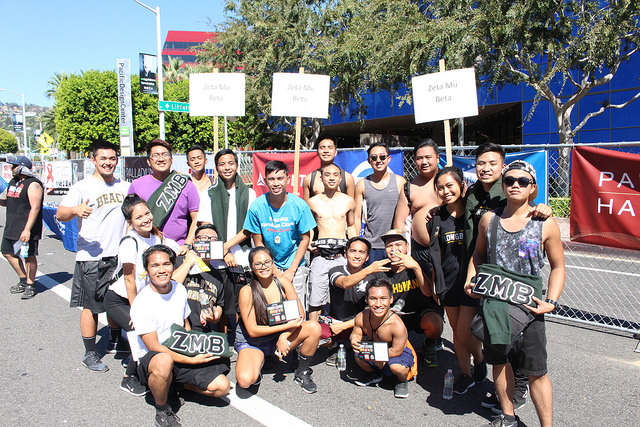
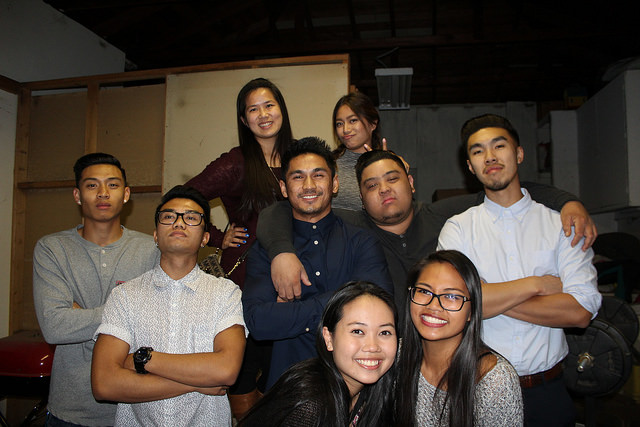

Philanthropy | Cultural | Social | Academic | Fundraising | Queens



Believe it or not, racial discrimination still occurs in our world today.
A large amount of people still fight one another due to skin color, ethnic background, and/or religion, but to a certain group of individuals, none of this mattered.
This group of individuals cared for each other and loved one another through thick and thin, regardless of race or religion.
No one was treated differently from the other; White, Black, Asian, or Hispanic, everyone was equal.
At a time of racial and gang warfare, one of its most beloved brothers, Fred Gonzalez, was shot and killed.
This incident brought both sadness and anger upon the group's brothers, but they couldn't let this bring them down.
They took this loss as an opportunity to reach out to others and bring the word of Zeta Mu Beta out.
From this, a goal was developed. This goal was to demonstrate unification amongst one another and to the future and oncoming members.
This unique, non-profit organization has been established for unity among the youth that does not discriminate regardless of skin color, religion, or sexual orientation.
In addition, this group was made to help create unity and promote equality for the society of the present world.
The objective of this organization is to coordinate and unite for the educational and professional development purposes of students in the Universities and Colleges of America and for the Alumni members of Zeta Mu Beta, in order that this Fraternity may promote the unification of everyone's difference to its members and the profession.